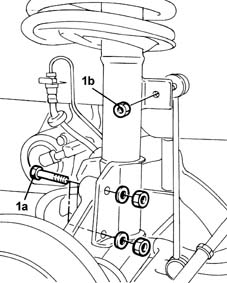
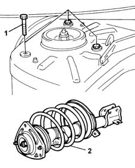
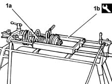
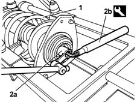

4410A12 front suspension damper (one), lh or rh - for mcpherson strut system - includes dismantling/re-building of assembly at bench r r
- Path
- Procedures > 44 SUSPENSION AND WHEELS > 4410 FRONT SUSPENSION > 4410A front dampers and springs > 4410A12 front suspension damper (one), lh or rh - for mcpherson strut system - includes dismantling/re-building of assembly at bench r r
- Kind
- repair procedure (removal / refitting; the operation number is the code)
- Applies to
- all engines; all production periods
- Interactive page
- https://sloeber94.github.io/elrnDB-fMltpl/en/#/2891704
Applies to: all engines; all production periods
 Removing
Removing
 Refitting
RefittingPosition the vehicle on the ramp.
Open the bonnet.
Disconnect the battery negative (-) terminal.
 | Name | Connector |
|---|---|---|
- | Battery |
Fit the protective bodywork covers.
Raise the car.
4450B10 Front WHEEL (one) - R.R. .
Remove the brake caliper pipe and the front brake pad wear sensor cable from the shock absorber supports.
1. Undo the bolts (1a) fixing the shock absorber to the hub steering knuckle and the nut (1b) fixing it to the anti-roll bar anchorage rod.

Applies to: all engines; all production periods
Lower the vehicle.
1. Undo the bolts fixing the upper shock absorber mounting to the bodyshell.
2. Remove the front shock absorber.

Applies to: all engines; all production periods
1. Position the front shock absorber (1a) on the pneumatic cool for compressing the springs (1b).
 | Name | Country |
|---|---|---|
1b | Support | 1.874.555.000 |

Applies to: all engines; all production periods
1. Compress the shock absorber spring.
2. Undo the nut (2a) fixing the upper mounting, securing the shock absorber stem using the tool (2b).
| Name | Country |
|---|---|---|
2b | Key | 1.857.509.000 |

Applies to: all engines; all production periods
Release the spring and remove the front shock absorber assembly components.
Applies to: all engines; all production periods
Refitting
RemovingRefit the front shock absorber assembly components and compress the spring using the special pneumatic tool.
| Name | Country |
|---|---|---|
- | Support | 1.874.555.000 |
Using the tool for locking the shock absorber stem, tighten the nut fixing the upper mounting, but not fully.
| Name | Country |
|---|---|---|
2 | Key | 1.857.509.000 |
Remove the front shock absorber from the pneumatic tool for compressing springs.
If the mileage for the shock absorbers is more than 20,000 - 25,000 Km, always replace both shock absorbers for each axle together, taking care to fit the same type of shock absorbers from those available as spares on the same axle.
If the mileage for the shock absorbers is below 20,000 - 25,000 Km, then one shock absorber only can be replaced, as long as the new one is the same type and after having checked that the other shock absorber is in perfect working order.
Fit the front shock absorber.
Tighten the bolts fixing the upper shock absorber mounting to the bodyshell to torque.
 | Fastening | Component | Ø | Value (daNm) |
|---|---|---|---|---|
- | Bolt | FRONT DAMPER TOP ATTACHMENT | M8 | 4 |
Raise the vehicle.
Tighten the nuts fixing the shock absorber to the hub steering knuckle to torque.
| Fastening | Component | Ø | Value (daNm) |
|---|---|---|---|---|
- | Nut | FRONT HUB STEERING KNUCKLE. | M10 x 1.25 | 7 |
Tighten the nut fixing the shock absorber to the anti-roll bar anchorage rod to torque.
| Fastening | Component | Ø | Value (daNm) |
|---|---|---|---|---|
- | Nut | FRONT ANTI-ROLL BAR. ANCHORAGE ROD. | M10 x 1.25 | 6 |
Fit the brake caliper pipe and the front brake pad wear sensor cable to the shock absorber mountings.
4450B10 Front WHEEL (one) - R.R. .
Lower the vehicle with the wheels resting on the ground.
Using the tool for locking the shock absorber stem, tighten the nut fixing the upper mounting to torque.
| Name | Country |
|---|---|---|
2 | Key | 1.857.509.000 |
| Fastening | Component | Ø | Value (daNm) |
|---|---|---|---|---|
- | Nut | FRONT DAMPER | M12 x 1.25 | 8.5 |
Remove the protective bodywork covers.
Connect the negative (-) battery terminal.
| Name | Connector |
|---|---|---|
- | Battery |
Close the bonnet lid.
Remove the car from the ramps.
Topics linked from this page (2)
Topics that link to this page (7)
- H01 VEHICLE DRIFT
- H02 DRIFT WHILST BRAKING
- H12 STEERING TOO SENSITIVE
- H20 STEERING WHEEL OSCILLATIONS/ VIBRATIONS / WHILST DRIVING
- S41 NOISE' FRONT / WHILST DRIVING OVER UNMADE ROAD
- X50 TYRE WEAR
- 4410A18 Front suspension dampers - for mcpherson strut system - R+R - includes dismantling/re-building of assemblies at bench